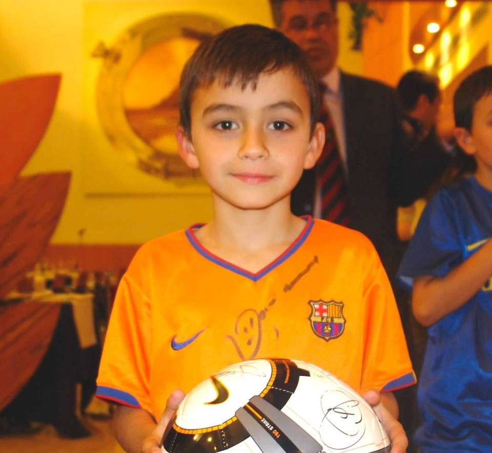

Pedro González López, conocido mundialmente como Pedri, no se hizo culé al fichar por el Barça; nació siendo uno. En su casa de Tegueste (Tenerife), el barcelonismo era una religión. Su abuelo, Fernando, fue el fundador de la Peña Barcelonista de Tenerife-Tegueste en 1994, una pasión que heredó su padre, quien actualmente preside la peña.
Se cuenta que en la casa de los González incluso la vajilla tenía el escudo del FC Barcelona. Su infancia transcurrió entre platos de comida canaria en el negocio familiar, "Tasca Fernando", y partidos de fútbol donde siempre jugaba contra niños mucho mayores que él, lo que le obligó a desarrollar una velocidad mental asombrosa para evitar el contacto físico.
A principios de 2018, el destino pudo ser muy distinto. Pedri viajó a la capital para realizar una prueba con el Real Madrid en Valdebebas. Sin embargo, la suerte (o el destino culé) intervino: una fuerte nevada histórica en Madrid impidió que los entrenamientos se desarrollaran con normalidad.
Apenas pudo entrenar un par de días y, según relata el propio Pedri, los técnicos del Madrid le dijeron que "no tenía el nivel suficiente" para quedarse. Lejos de desanimarse, regresó a Canarias, fichó por la UD Las Palmas y el resto es historia: Pepe Mel confió en él para el primer equipo con solo 16 años y el Barça no tardó en cerrar su fichaje antes de que otros grandes se dieran cuenta del error histórico del club blanco.
Su llegada al Barça fue un soplo de aire fresco. En un equipo en transición, Pedri se convirtió rápidamente en el mejor socio de Leo Messi, demostrando una conexión telepática con el astro argentino. Su capacidad para "escanear" el campo antes de recibir el balón recordó a las mejores épocas de Xavi e Iniesta.
En el año 2021, su carrera explotó definitivamente al encadenar la temporada liguera, la Eurocopa (donde fue el mejor joven) y los Juegos Olímpicos de Tokio. Ese mismo año recibió el Golden Boy y el Trofeo Kopa, confirmándose como el nuevo faro del mediocampo azulgrana y heredero del dorsal 8.